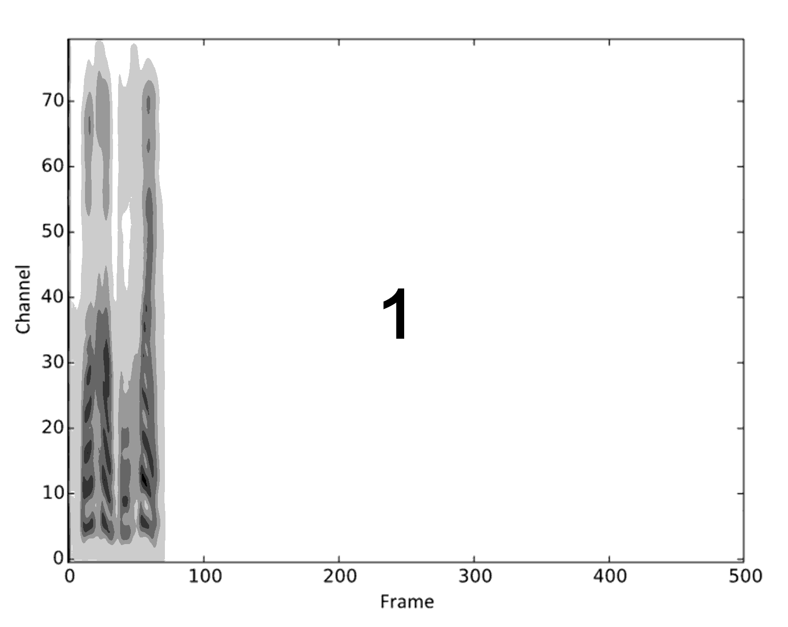
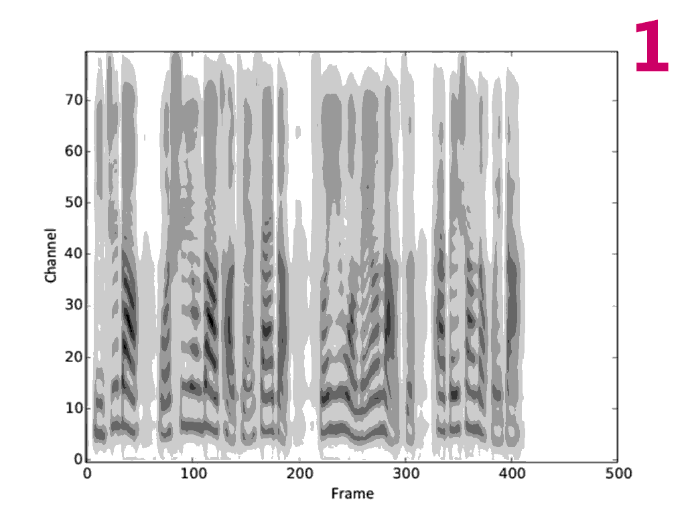

Demos for "Multi-reference Tacotron by Intercross Training for Style Disentangling,
Transfer and Control"
Paper: Under review.
Author: Yanyao Bian, Changbin Chen, Yongguo Kang, Zhenglin Pan
Abstract: This paper introduces a novel multi-references structure to Tacotron for multiple styles control.
We train this model by intercross training, a weakly supervised optimization method, so that each
sub-encoder of the multi-references encoder independently disentangles and controls a specific
style. With the proposed model, one can control speech styles in macroscopic and interpretable
ways such as linear interpolation between style representations in a continuous latent space.
Several experiments are conducted to show the proposed model's capability of style disentangling,
control and transfer, which is simple, intuitive and robust enough for industrial production.
Introduction
Demos here are generated by WaveNet for better audio fidelity. However, the works in the paper
is irrelevant to the audio quality. When hearing the demos, the readers are recommended to
focus on the distinguishing audios with different styles.
Experiments in Paper
Single-reference
Style Transfer (refer to section 3.1.2 in paper)
Original vs. Intercross
speaker1, text1
speaker1, text2
speaker1, text3
speaker1, text4
Reference audios
Original
Intercross
More style transfer cases
speaker2
speaker3
speaker4
speaker5
Reference audios
Text5
Text6
Text7
Style Control (refer to section 3.1.3 in paper)
Visualization of gradual changes in mel-spectrogram


Interpolating from speaker2 to speaker5
speaker2, α = 0.0
α = 0.25
α = 0.5
α = 0.75
speaker5, α = 1.0
Text5
Text6
Text7
Random Sampling (refer to section 2.4 in paper)
Few-shot & One-shot (refer to section 3.1.4 in paper)